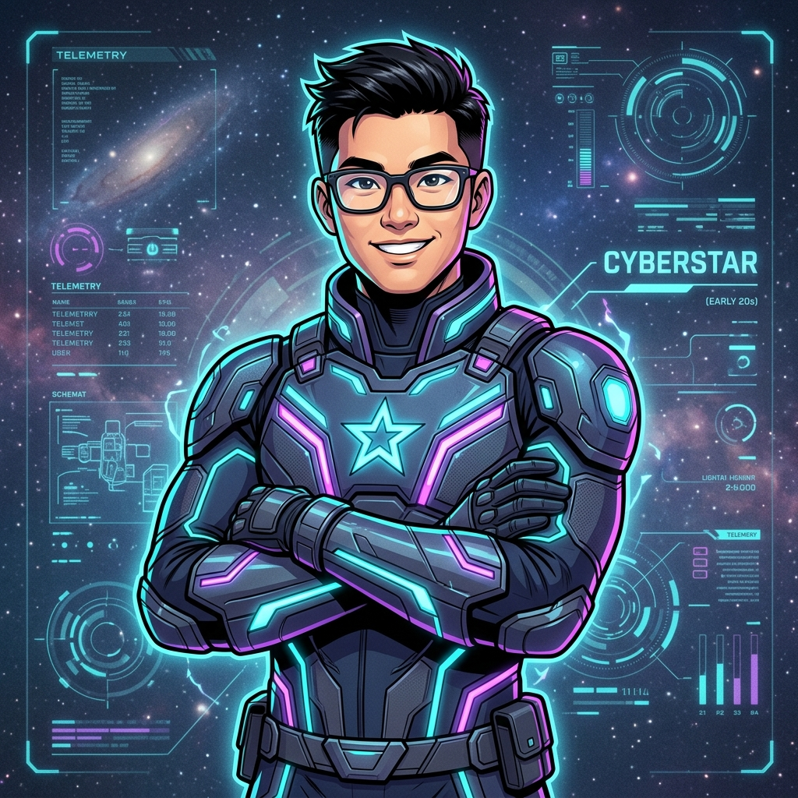

Cadet at the United States Military Academy specializing in Mathematical Sciences, Cyber Operations, Applied Machine Learning, and Ultra-Endurance Propulsion. Focused on high-stakes modeling from network intrusion analytics to golf ballistics and 100-mile ultra-marathon execution.
.pcapng parsing), K-means clustering, and CNN deep learning on CIFAKE dataset
atran@mission-control:~$ cat mission_parameters.json
{
"cadet": "Andrew Tran",
"class": "USMA 2027",
"hometown_station": "West Point, NY / Fu Jen Catholic Univ",
"primary_directive": "Master mathematical rigor, data systems, and tactical leadership",
"system_status": "ALL TELEMETRY NOMINAL"
}
atran@mission-control:~$
| Institutional Comms | andrew.tran@westpoint.edu |
| Academic Department | Department of Mathematical Sciences • United States Military Academy |
| Course GitHub Link | dusty-turner/MA491-AY71-1 |
| Key Focus Areas | Applied Machine Learning, Network Packet Analysis, Ultrarunning, Quantitative Sports Analytics |